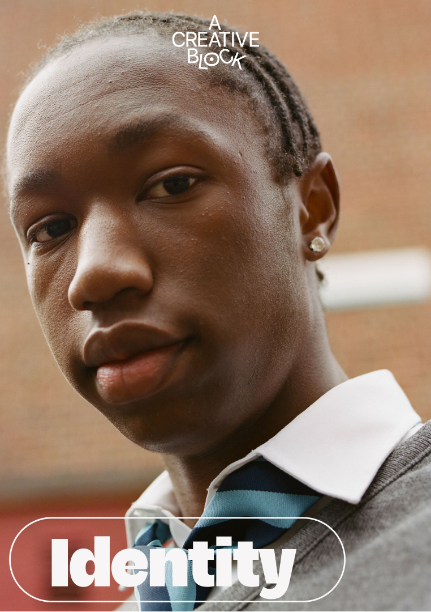

Team Workshop
€1,500
Three hours on a live issue: identify the block, clarify what should change and define experiments, decisions and owners.
For agencies, studios, schools and organisations facing slow decisions, circular feedback, unclear ownership, depleted teams or projects that keep losing momentum.
A creative problem is not always “someone’s mindset.” Time poverty, contradictory briefs, decision bottlenecks, poor feedback, unclear roles, overload and unsafe evaluation can produce block at team level.
We combine facilitation, creative consulting and coaching to work on the project, the people and the system around them.

Never ask only, “What is wrong inside the person?” Also ask, “What is the work asking for—and what is the system around the person doing to them?”
Company work is quoted by scope, participants, preparation, customisation and follow-up.
Three hours on a live issue: identify the block, clarify what should change and define experiments, decisions and owners.
A full day for several interconnected problems, including working agreements and follow-up actions.
Three connected workshops to diagnose, experiment, review and create changes that survive beyond one day.
For vague critique, defensive reactions, endless revisions or unclear decision authority. €900–1,200.
Leadership scoping, diagnostic conversations, substantial team work, targeted coaching, experiments and final recommendations. €5,000–7,000 at launch.
A defined retainer supporting creative teams and leaders—not unlimited access. From €1,500/month.
Evidence-informed talks for companies, schools, universities, festivals and conferences. Topics can include why creative work gets stuck, moving from idea to action, creative confidence, feedback and the conditions teams need to experiment.
Community/university:€250–500 · commercial/small company: €750–1,250 · corporate/larger organisation: €1,500–2,500.